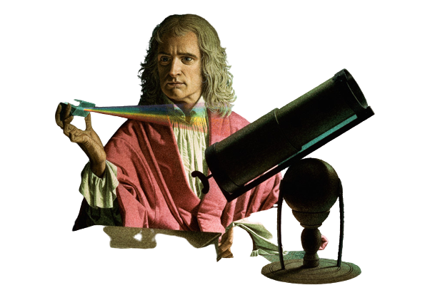

Biography
Isaac Newton is best known for having invented the calculus in the mid to late 1660s (most of a decade before Leibniz did so independently, and ultimately more influentially) and for having formulated the "theory of universal gravity" — the latter in his Principia, the single most important work in the transformation of early modern natural philosophy into modern physical science. Yet he also made major discoveries in "optics" beginning in the mid-1660s and reaching across four decades; and during the course of his 60 years of intense intellectual activity he put no less effort into chemical and alchemical research and into theology and biblical studies than he put into mathematics and physics.
He became a dominant figure in Britain almost immediately following publication of his Principia in 1687, with the consequence that “Newtonianism” of one form or another had become firmly rooted there within the first decade of the eighteenth century. His influence on the continent, however, was delayed by the strong opposition to his "theory of gravity" expressed by such leading figures as Christiaan Huygens and Leibniz, both of whom saw the theory as invoking an occult power of action at a distance in the absence of Newton's having proposed a contact mechanism by means of which forces of gravity could act.
Two factors stand in the way of giving an account of Newton's work and influence. First is the contrast between the public Newton, consisting of publications in his lifetime and in the decade or two following his death, and the private Newton, consisting of his unpublished work in math and physics, his efforts in chymistry — that is, the 17th century blend of alchemy and chemistry — and his writings in radical theology — material that has become public mostly since World War II. Only the public Newton influenced the eighteenth and early nineteenth centuries, yet any account of Newton himself confined to this material can at best be only fragmentary. Second is the contrast, often shocking, between the actual content of Newton's public writings and the positions attributed to him by others, including most importantly his popularizers. The term “Newtonian” refers to several different intellectual strands unfolding in the eighteenth century, some of them tied more closely to Voltaire, Pemberton, and Maclaurin — or for that matter to those who saw themselves as extending his work, such as Clairaut, Euler, d'Alembert, Lagrange, and Laplace — than to Newton himself.
References & Citations:
Enlightening Science digital project: Texts of his papers, "Popularisations" and podcasts at the Newton Project
Thony, Christie (2015). "Calendrical confusion or just when did Newton die?". The Renaissance Mathematicus. Archived from the original on 2 April 2015. Retrieved 20 March 2015.
Winter 2007 (first archived) [author: Smith, George]
Newton, Isaac (February 1678). Philosophical tract from Mr Isaac Newton. Cambridge University. Archived from the original on 8 October 2016. Retrieved 1 October 2021.
Smith, George, "Isaac Newton", The Stanford Encyclopedia of Philosophy (Fall 2008 Edition), Edward N. Zalta (ed.).